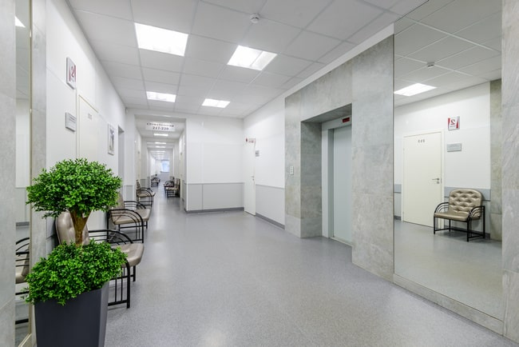
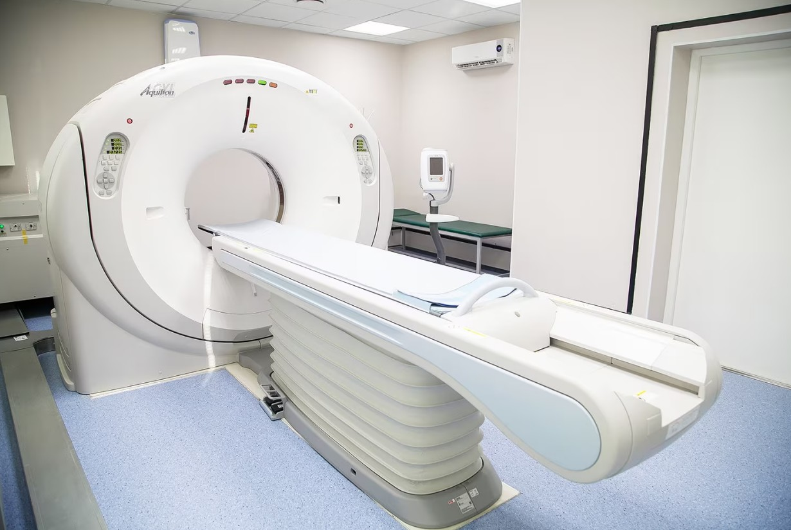

О центре медицинских услуг МСЧ № 157 г. Санкт-Петербурга
Основная информация
Полное наименование медицинской организации: Общество с
ограниченной ответственностью "Медико-Санитарная Часть № 157"
Сокращенное наименование: ООО "МСЧ № 157"
Фирменное наименование: Общество с ограниченной ответственностью
"Медико-Санитарная Часть № 157"
Место нахождения: Санкт-Петербург, ул. Варшавская, д. 100
Юридический адрес медицинской организации: 196066, г.
Санкт-Петербург, Варшавская улица, дом100, литер А
Свидетельство о внесении записи в Единый государственный реестр
юридических лиц:
17.08.2007 г. Межрайонная инспекция Федеральной налоговой службы №15 по
Санкт-Петербургу, серия 78 № 005878528
Основной государственный регистрационный номер:
1077847551396, 17.08.2007г. Межрайонная инспекция Федеральной налоговой
службы № 15 по Санкт-Петербургу, серия 78 № 005878528 (скачать pdf)
Идентификационный номер налогоплательщика: 7810486166
Выписка из ЕГРЮЛ/ЕГРИП (скачать pdf)
Сведения об учредителях: Юридическое лицо: Общество с ограниченной ответственностью «ПромИнвест» ОГРН 1067847426680. Физическое лицо: Баранова Мария Владимировна
Регистрационный номер лицензии: ЛО41-01148-78/00571989 от 15 октября 2019 г., выдана бессрочно Комитетом по Здравоохранению г. Санкт-Петербург (191011, г. Санкт-Петербург, ул. Малая Садовая, 1, тел.(812) 595-89-79

Руководители МСЧ №157 и график приёма граждан
Уважаемые пацинты! Приём граждан руководителями "МСЧ №157" осуществляется по предварительной записи. Записаться на приём Вы можете по тел. +7 (812) 415-37-15.
Мария Владимировна
(по предварительной записи)

Вера Владимировна
(по предварительной записи)
Ирина Александровна
Преимущества МСЧ № 157


{kind=link}
{kind=link}
{kind=link}
{kind=link}
{kind=link}
История
С целью оказания медицинской помощи и проведения профосмотров при конструкторских бюро и оборонных предприятиях СССР создавались лечебные подразделения. При слиянии ПТО "Ленинец", НПО "Марс" и НТО "Новатор" в 1970-х годах здравпункты при них были объединены в единую Медсанчасть № 53. На учреждение также были возложены функции поликлиники Московского района г. Ленинграда.
В 1988 году МСЧ №53 была реорганизована в МСЧ №157 и перешла под контроль 3-го Главного управления Минздрава СССР. Ее структура дополнилась СЭС, а увеличившееся финансирование было направлено на закупку нового оборудования и повышение квалификации сотрудников. На базе учреждения стали оказываться пользующиеся повышенным спросом в СПб платные медицинские услуги. В 1990 году в МСЧ №157 открылось стоматологическое и зубопротезное отделение, оснащенное высокотехнологичным зарубежным оборудованием и материалами.
В соответствии с действующим законодательством с 1991 года учреждение регулярно получает лицензии на все виды предоставляемых медицинских услуг. Начиная с 1993 года МСЧ №157, заключает договора на обслуживание пациентов по полисам ДМС.

Персонал и инструментальная база
Сегодня штат МСЧ №157 состоит из более 130 врачей различных специальностей, а это доктора и кандидаты медицинских наук, заслуженные врачи РФ, а также более 80 медицинских сестер. Все сотрудники имеют сертификаты специалистов, регулярно повышают собственный профессиональный уровень путем дополнительного обучения. В клинике действуют внутренние стандарты, направленные на обеспечение высокого уровня сервиса и комфорта пациентов. Диагностика и лечение осуществляются с применением новейших медицинских технологий, доказавших свою эффективность.
Структура и органы управления, структурные подразделения
Перечень структурных подразделений клиники ООО "МСЧ №157", оказывающих медицинские услуги:
- Терапевтическое отделение
- Неврологическое отделение
- Хирургическое отделение
- Гинекологическое отделение
- Отделение стоматологии
- Отделение восстановительной медицины
- Рентгенодиагностическое отделение
- Кабинет ультразвуковой диагностики
- Кабинет функциональной диагностики
- Кабинет эндоскопии
- Клинико-диагностическая лаборатория
Структура и органы управления ООО "МСЧ №157"
Страховые компании
Порядки оказания и стандарты медицинской помощи
Медицинская помощь оказывается на основании стандартов медицинской помощи pravo.gov.ru и клинических рекомендаций cr.minzdrav.gov.ru
Перечень порядков оказания медицинской помощи
Перечни лекарственных препаратов

СОУТ (Специальная оценка условий труда)
Сводная ведомость результатов проведения СОУТ 2015 г.-2019 г.
Перечень рекомендуемых мероприятий по улучшению условий труда 2015 г.-2019 г.
Сводная ведомость результатов проведения СОУТ 2020 г.-2022 г.
Перечень рекомендуемых мероприятий по улучшению условий труда 2020 г.-2022 г.
Сводная ведомость результатов проведения СОУТ 2023 г.
Перечень рекомендуемых мероприятий по улучшению условий труда 2023 г.
Сводная ведомость результатов проведения СОУТ 2024 г.
Перечень рекомендуемых мероприятий по улучшению условий труда 2024 г.
Сводная ведомость результатов проведения СОУТ 2025 г.
Перечень рекомендуемых мероприятий по улучшению условий труда 2025 г.